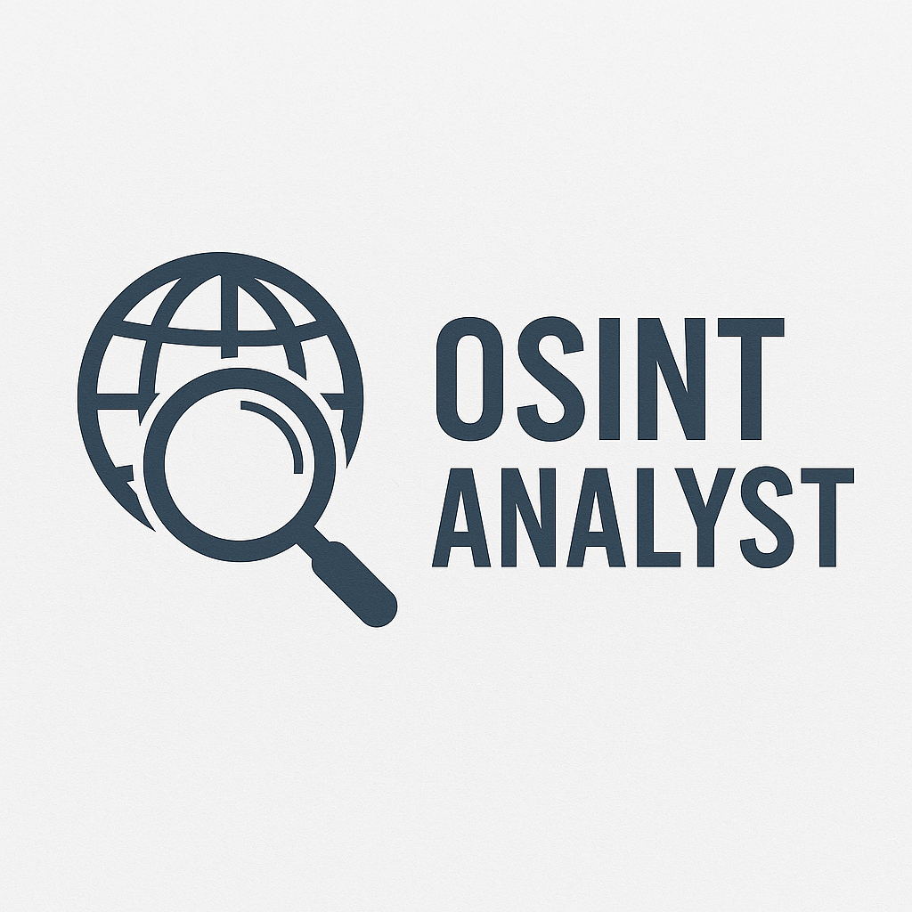

Mike Charlie
Freelance OSINT Analyst & Investigator
I help individuals, journalists, lawyers, and organizations verify people, companies, and events using only legal open-source techniques. No calls – just email clarity, discretion, and documentation.
What I can help you with:
- Background checks (people & companies)
- Due diligence for business partnerships
- Online reputation & digital footprint analysis
- Corporate & competitive research
- Investigative support for journalism or legal needs
How I work:
- All investigations based on legal, ethical OSINT practices
- No phone or video calls – email communication only
- Clear reports, timelines, and documentation
- Freelance contract – flexible and confidential
I do not accept assignments that involve:
- minors,
- matters of a sexual nature,
- activities that may infringe on the privacy of third parties,
- tasks based solely on speculation without concrete data,
- activities requiring breaking the law or interfering with IT systems.
I cooperate only with:
- adults,
- companies, institutions, journalists, and lawyers,
- clients who clearly define the purpose and scope of the assignment and declare that the results will be used in accordance with the law and ethical standards.
Mike Charlie
Freelance OSINT – Analiza i Dochodzenia
Pomagam osobom prywatnym, dziennikarzom, prawnikom i firmom w weryfikacji ludzi, firm i zdarzeń na podstawie jawnych, legalnych źródeł. Bez rozmów – tylko klarowna komunikacja e-mailowa, dyskrecja i raporty.
W czym mogę pomóc:
- Sprawdzanie przeszłości (osoby i firmy)
- Due diligence w relacjach biznesowych
- Analiza reputacji online i śladów cyfrowych
- Profilowanie firm i analiza konkurencji
- Wsparcie dziennikarskie lub prawnicze
Jak pracuję:
- Wyłącznie legalne i etyczne techniki OSINT
- Bez rozmów telefonicznych – tylko e-mail
- Raporty, terminy i dokumentacja
- Współpraca freelance – elastyczna i poufna
Nie przyjmuję zleceń, które dotyczą:
- osób niepełnoletnich,
- spraw o charakterze seksualnym,
- działań mogących naruszać prywatność osób postronnych,
- zadań opartych wyłącznie na domysłach, bez konkretnych danych,
- aktywności wymagających łamania prawa lub ingerencji w systemy informatyczne.
Współpracuję tylko z:
- osobami pełnoletnimi,
- firmami, instytucjami, dziennikarzami i adwokatami,
- klientami, którzy jasno określają cel i zakres zlecenia oraz deklarują wykorzystanie wyników zgodnie z prawem i etyką.